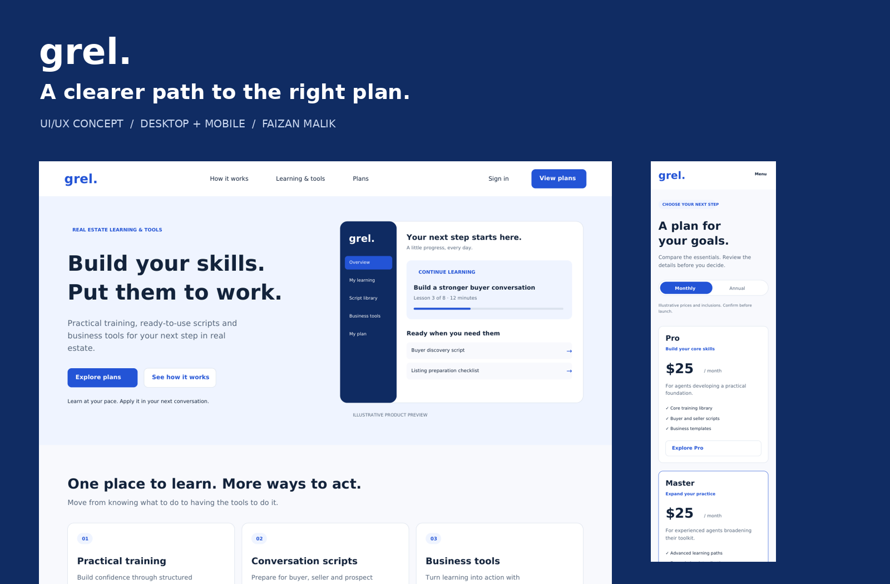
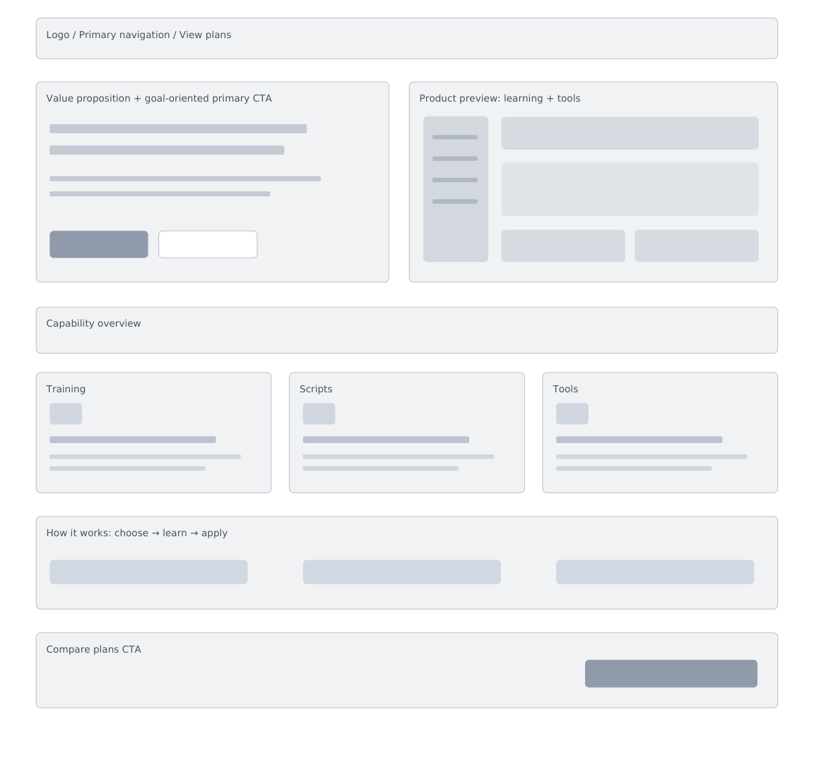
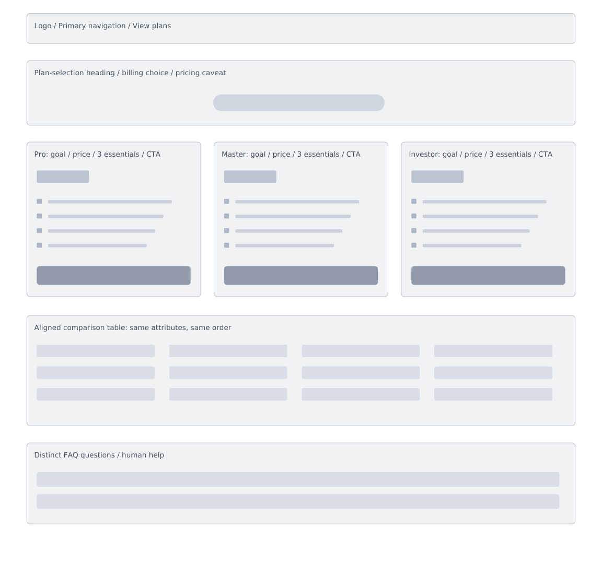
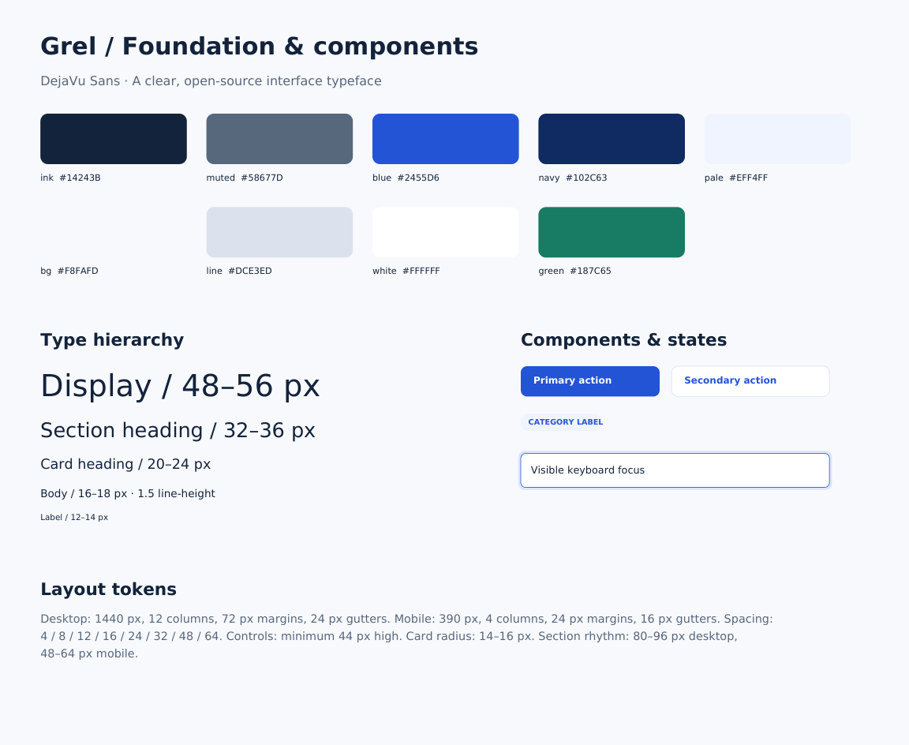
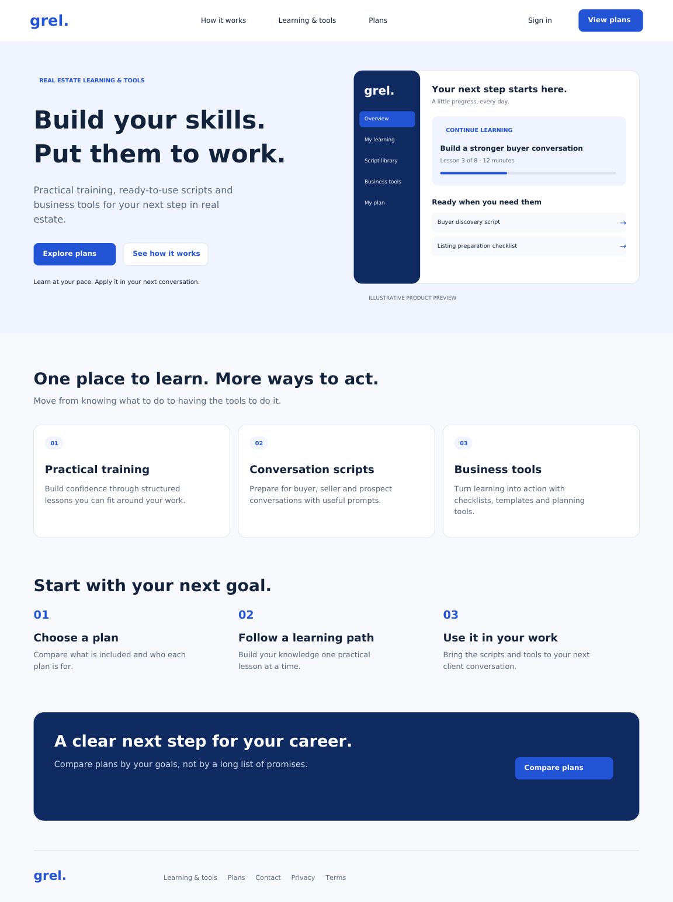
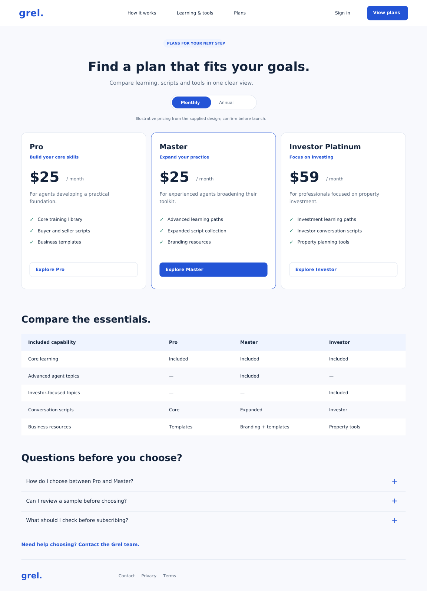
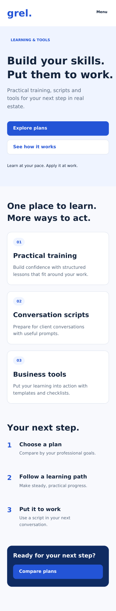
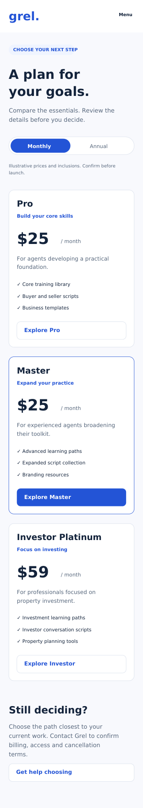

GREL / UI/UX CONCEPT REDESIGN
A clearer path to
the right plan.
Turning a content-heavy learning website into a more focused discovery and plan-selection experience.
Concept project · Home & plans · Desktop & mobile · Prepared for Faizan Malik’s portfolio

01 / The brief
Make the next step easier.
Grel brings real-estate learning, scripts and practical resources together. This concept redesign focuses on helping visitors understand the offer and compare learning plans with less uncertainty.
02 / The starting point
Clarity before decoration.
A review of the supplied homepage and plan-page designs identified dense content, overlapping plan positioning and repeated questions. These are heuristic observations, not findings from user interviews. The redesign prioritizes a concise value proposition, clearer plan differences and a consistent route from discovery to comparison.
03 / Requirements & structure
One clear route through the product.
Proposed requirements: communicate the learning offer quickly; make plan inclusions easy to scan; preserve an obvious route to comparison; and adapt content to narrow screens. The primary journey is Home → Explore learning → Compare plans → Review a plan. Payment and enrollment are outside this concept.
04 / Wireframes
Hierarchy first.
Low-fidelity layouts establish the message, learning categories, plan comparison and supporting questions before visual styling.
{kind=link}

{kind=link}

05 / Visual system
Calm, confident and consistent.
A blue, navy and white palette separates primary actions from supporting content. DejaVu Sans provides a clear, portable type foundation. Shared buttons, cards, spacing and feedback states make both pages feel like one product.

06 / Final interface
Two pages. One coherent experience.
The homepage introduces the learning offer in a progressive sequence. The plans page organizes choices around comparison, with supporting details close to the decision. Pricing and entitlements are illustrative and require business confirmation.
{kind=link}

{kind=link}

07 / Responsive design
Designed for smaller screens, too.
Mobile boards stack content and plan information into a single reading order. The prototype offers separate desktop and mobile views; it is a screen-based design review, not a production service.


08 / Validation & next steps
A concept ready to test.
Next: test whether prospective learners can explain the offer, identify an appropriate plan and locate answers without assistance. Validate plan content with stakeholders and test keyboard navigation, focus order and screen-reader behavior in implementation. No user testing or measured conversion results are claimed.
EXPLORE THE DETAILS